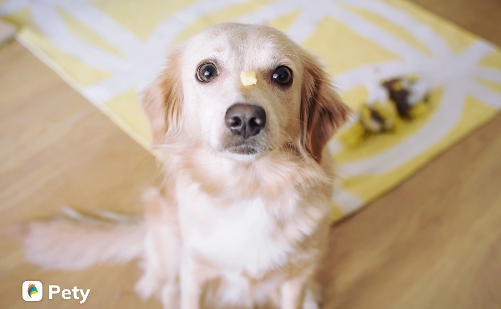

Hướng Dẫn Cách Nuôi Chó Trong Nhà Cho Người Mới Bắt Đầu
Hướng dẫn cách chăm sóc, cách nuôi chó trong nhà cho người mới bắt đầu đảm bảo sức khỏe, chuẩn như chuyên gia

Hiểu rõ về đặc điểm của từng giống chó, nắm rõ kinh nghiệm, cách nuôi chó trong nhà có thể giúp thú cưng của bạn khoẻ mạnh. Cách chăm sóc, cách nuôi chó trong nhà không phải đơn giản là đưa một chú chó về, cho ăn thật nhiều, tắm rửa sạch sẽ là tốt. Vậy cách chăm sóc, cách nuôi chó như thế nào là đúng cách và đảm bảo sức khỏe cho thú nuôi? Bài viết này Pety sẽ hướng dẫn cách nuôi chó trong nhà cơ bản cho người mới nuôi chó.
1. Chọn giống chó phù hợp
Là một người bạn thân thiết và được nhiều người lựa chọn để nuôi trong nhà như một thú cưng, tuy nhiên mỗi giống chó có đặc điểm khác biệt và phù hợp với một loại đối tượng người nuôi. Chính vì vậy, việc chọn lựa cho bản thân một giống chó phù hợp là nền tảng để bạn đảm bảo nuôi chó đúng cách và đảm bảo nuôi chó trong nhà khỏe mạnh.
Một số yếu tố trước khi tìm hiểu các hướng dẫn cách nuôi chó trong nhà bạn nên xem xét để lựa chọn giống chó nuôi phù hợp: môi trường và không gian sống của bạn là nhà riêng hay chung cư, chật hẹp hay rộng rãi; mức sống và mức chi phí bạn sẵn sàng sử dụng cho chú chó của bạn; tính cách của bạn là năng động, hướng ngoại thì các giống chó lớn, ưa thích hoạt động như chó Alaska, chó Samoyed, … phù hợp, ngược lại với người hướng nội, thích yên tĩnh các giống chó nhỏ như chó Poodles, chó Chihuahua.
2. Chọn địa chỉ mua hoặc nhận nuôi tin cậy
Theo các chuyên gia và những người nuôi có kinh nghiệm, tốt nhất nên mua hoặc nhận nuôi chó của chủ nuôi có chó mẹ ở nhà đẻ hay trực tiếp nhập về có nguồn gốc, lý lịch rõ ràng. Luôn lựa chọn những bé nhanh nhẹn, khỏe mạnh, có “sổ sức khoẻ” đi kèm dán tem các loại vacxin đã tiêm phòng cho chó và ngày tẩy giun cho chó định kỳ.
Ngoài ra, bạn nên lựa chọn chó con trên 2 tháng tuổi dễ nuôi, ổn định hơn vì chó con dưới 2 tháng tuổi vẫn phụ thuộc nhiều vào mẹ, rất khó để chăm sóc. Bạn có thể tách mẹ và bắt đầu việc cai sữa, ăn dặm cũng như bắt đầu huấn luyện để hình thành tính cách của chúng theo mong muốn của bạn.
3. Cách nuôi chó khi mới về nhà
3.1. Kiểm tra sức khoẻ
Đưa chó đến bác sĩ thú y uy tín để thực hiện khám sức khoẻ tổng thể và được nhận tư vấn trực tiếp cách chăm sóc chó phù hợp với giống chó và thể trạng chú cún của bạn. Yêu cầu bác sĩ cấp sổ khám bệnh để theo dõi hoặc chủ động tạo hồ sơ sức khỏe thú cưng trên Pety giúp theo dõi, cập nhật thông tin sức khỏe thú cưng thường xuyên để nhận những gợi ý, tư vấn hay cảnh báo vấn đề sức khỏe thú cưng.
3.2. Chuẩn bị chỗ ở của chó
Chỗ ở cho chó cần thoáng mát, ấm, có đủ không khí và tránh để chó nằm điều hoà hay trước quạt vì dễ có khả năng bị nhiễm lạnh, ho. Những người nhiều kinh nghiệm nuôi chó thường chỉ dẫn các vị trí không nên để chỗ ở vị trí cao như cửa sổ, ban công, cầu thang…
3.3. Tắm cho chó
Lưu ý về cách chăm sóc chó khi mới đưa chó con về nhà không nên tắm ngay bằng nước để tránh bị viêm phổi và phát triển thành các bệnh truyền nhiễm nguy hiểm. Nếu thấy cún hôi, hãy tắm khô.
4. Hướng dẫn cách chăm sóc chó trong việc ăn uống

4.1. Cho chó ăn đủ dinh dưỡng, đủ chất
Đủ chất, đủ dinh dưỡng, đủ năng lượng, tuyên nhiên không nên lạm dụng thức ăn khô, thuốc hoặc thức ăn tổng hợp. Với chó con có, nên cân đối liều lượng cho ăn hợp lý do chó con thường ăn hết khẩu phần được cho, không cho ăn quá nhiều sữa, cá tanh, mỡ, thức ăn mặn. Thực phẩm không nên cho chó ăn: socola, kẹo, bánh ngọt, xương gà, vịt … ở dạng thô.
4.2. Cho chó ăn uống khoa học
Với chó con, cách cho ăn uống khoa học: khoảng 3 – 4 bữa ngày, chỉ cho ăn gần no, không để sẵn đồ ăn, nước uống sạch và luôn đầy đủ, dụng cụ ăn sạch sẽ, khô ráo, thay đổi đồ ăn cho chó sang loại khác sau mỗi một tuần và bắt đầu bằng việc thêm một phần thức ăn mới với ba phần thức ăn cũ, sau dần chuyển hẳn sang loại mới.
5. Hướng dẫn cách chăm sóc sức khỏe
5.1. Lịch trình tẩy giun cho chó
Chó dưới 6 tháng tuổi: Dùng thuốc tẩy giun cho chó ngay sau khi được 1 tháng tuổi, mỗi tháng tẩy lại 1 lần cho đến khi được 6 tháng tuổi.
Chó trên 6 tháng tuổi: Tẩy giun 3 – 4 tháng một lần.
5.2. Tiêm phòng cho chó
Việc tiêm phòng bệnh cho chó là cách chăm sóc chó trong nhà người mới bắt đầu nên biết để đảm bảo sức khoẻ, tránh những bệnh nguy hiểm cho chó: Carre (Carre Distemper), Pavovirus (Canine Pavovirus), Viêm gan (Adenovirus type 1), bệnh hô hấp (Adenovirus type 2), bệnh phó cúm (Parainfluenza), Leptospirs. Thông thường những bệnh trên thường tiêm chung trong một mũi vacxin. Riêng tiêm phòng dại cho chó cần phải tiêm nhắc lại mỗi năm.
6. Huấn luyện và cách nuôi chó trong nhà

6.1. Hướng dẫn cách dạy chó đi vệ sinh đúng chỗ
Giai đoạn mới về nhà, chó sẽ không biết chỗ để đi vệ sinh, xác định trước vị trí chúng thường xuyên ở, để chó trong chuồng hay nơi thoáng mát để dễ dàng cọ rửa và tìm hiểu các phương pháp huấn luyện là cần thiết.
Cách nuôi chó huấn luyện từ nhỏ sẽ giúp chú chó của bạn ý thức được việc nào đúng, việc nào sai, việc nào không được phép làm. Bắt đầu từ khung giờ sinh hoạt như ăn uống, đi vệ sinh, tập luyện và duy trì để giúp chó hiểu cách chăm sóc và mong muốn của bạn cũng như những gì nó có thể trông đợi.
Dành vài ngày đầu theo dõi xác định khoảng thời gian chúng thường đi vệ sinh. Thông thường sẽ là vào buổi sáng khi thức dậy và sau các bữa ăn khoảng 10 – 15 phút. Điều này cũng phụ thuộc vào đồng hồ sinh học của từng bạn.
Quan sát biểu hiện, thường khi cần đi vệ sinh, chúng sẽ xoay tròn tìm chỗ, có ý muốn ngồi xổm hoặc duỗi 2 chân sau. Hãy dẫn chúng đến nơi vệ sinh đã được quy định trước đó
Chỗ vệ sinh của chó có thể là một hộp gỗ hoặc hộp giấy có thành thấp để dễ dàng tự leo vào leo ra. Đáy hộp rải 1 lớp cát. Đặt hộp ở chỗ nhất định, thường gần chỗ chó nô đùa. Chỉ sau vài lần là chúng sẽ quen. Huấn luyện thành thói quen, bạn có thể điều chỉnh vị trí khay vệ sinh tới các vị trí khác nhau.Cẩm nang hướng dẫn cách nuôi chó trong nhà đảm bảo sức khỏe, chuẩn như chuyên gia
6.2. Hướng dẫn cách huấn luyện chó trong chuyện ăn uống
Huấn luyện chó trong chuyện ăn uống ít người quan tâm tuy nhiên chó ăn đúng nơi quy định, đúng bắt ăn, bắt uống không bạ chỗ nào cũng ăn, ai cho gì cũng ăn tránh được việc mất vệ sinh cũng như đề phòng bị đánh bả. Cách chăm sóc chó trong nhà để huấn luyện chuyện ăn uống: chọn các loại bát không quá sâu, miệng rộng tránh thức ăn rơi vãi lung tung, đặt tờ giấy hoặc tấm thảm ăn dưới bát để việc dọn dẹp nhanh hơn, không để khách đến nhà cho chó ăn để dạy chúng không ăn đồ ăn của người lạ, …
Tuy nhiên, với mỗi giống chó khác nhau cách nuôi cũng có nhiều sự khác biệt và lưu ý cụ thể mà người chủ cần dành thời gian để tìm hiểu. Một số hướng dẫn cách nuôi những giống chó giới trẻ Việt Nam hiện nay thường chọn nuôi: cách nuôi chó Alaska, cách nuôi chó pug, cách nuôi chó samoyed, cách nuôi chó poodle, cách nuôi chó phú quốc.
Pety hy vọng những thông tin được tổng hợp ở trên đã hướng dẫn cách nuôi chó trong nhà cơ bản cho người mới bắt đầu, tuy nhiên để đảm bảo cách chăm sóc chó chuẩn như chuyên gia khuyên hãy tìm hiểu thêm về giống chó, cách huấn luyện, thức ăn … cho thú cưng của bạn được Pety chia sẻ cụ thể ở các bài viết khác.